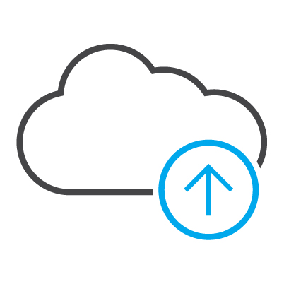

Your cloud, your journey
Your guide to the why, what and how of evolving with the cloud.
Or not...
The cloud is not a destination.
Let's clear up something right here at the beginning of your journey. Your journey to the cloud is not one journey, but many.
That is because the cloud is not a singular destination, contrary to the narrative of many cloud discussions in the market. It is common to make the cloud sound as if it is a place where you arrive. As though you are at A, the cloud is B, and all you need to do is get from A to B.
But the cloud is not your destination, is it? The cloud is simply a part of your mission-critical business. You must adapt to and straddle different IT deployments in ways that make sense for your business. One of those is the cloud, and an initial move to a cloud platform is just the first step. As you optimize your IT environment, the cloud will continue to evolve.
But even though the cloud is not your destination, you are still on a journey. Maybe you call it your digital transformation journey. Or your hybrid IT journey. What matters is that your organization’s transformation is catalysed by the cloud. Your workloads and apps move at different times, to different endpoints or cloud platforms.
Your cloud journey is multiple journeys, with multiple destinations. And as technologies evolve, new destinations become available, empowering your business to evolve. Some of your journeys will end. Other journeys will start.
The cloud advantage
Why you should start a cloud journey
Cloud has emerged as a platform that can unshackle IT from the manual efforts, processes and procedures of traditional legacy environments. It does this by creating highly secure, highly automated and highly agile hybrid environments designed for IT ease, management and accountability.
If your organization is just starting your cloud journey, the incentive is likely your need for greater agility and efficiency. And you need to enhance your ability to adapt quickly to changing conditions, and scale up (or down) at a moment’s notice.
Cloud computing has a number of benefits. If architected and deployed the right way with the right partner, cloud gives you greater flexibility, agility and control of your IT. It is typically more cost-effective, and is often used in a hybrid solution with hosted, collocated and traditional on-premises IT infrastructure.
Top reasons why organizations
are on a cloud journey

Decrease capital costs
Replace on-premise servers and storage with scalable compute and storage capacity on demand

Reduce operational IT costs
Save money by managing less internal IT infrastructure

Be more
agile
Provision servers and VMs in hours instead of days or weeks

Accelerate digital transformation
Create and deliver digitally enhanced products, services and experiences

Gain competitive advantage
Get to market with new products and services before competitors do

Boost IT efficiency
Only allocate and pay for compute, storage and network resources that are actually used
Which Cloud?
Consider these factors when evaluating your cloud options
Many organizations think their journey is simply deploying servers and virtual machines into a cloud — whether it is Azure, AWS or their own private cloud. But the cloud is a lot more complex than just spinning up a virtual machine. The cloud journey simply begins there.
Digital transformation
According to industry research firm IDC, digital transformation will soon reach macroeconomic scales. By 2021, at least 50 percent of the global GDP will be digitized, with growth in every industry driven by digitally enhanced offerings, operations and relationships.
Collaboration and access to information is key. Brainstorming a new idea or business concept — then testing it and rolling it out in weeks, days or even hours — is the pace that business innovation is occurring at today. Cloud is the enabler of this new speed of innovation.
Evaluating your cloud options
If your business is typical, you likely will not migrate everything to the cloud, and certainly not in one move. You will keep some of your compute, storage and network resources on-premises and host some of them in the cloud in a hybrid IT environment. The cloud is an evolution — workloads move and are optimised. Again, it is not simply a case of moving from A to B.
Hybrid IT environments feature two or more
of the following infrastructure options:
On-premises / self-managed
This is the traditional deployment model in which end users employ an IT department to manage IT assets — hardware and software — owned by the company. With the exception of firms born in the cloud, virtually 100 percent of businesses use this deployment model.
Colocation
The practice of using a third-party data center for the housing of servers and other IT devices is called colocation. End users retain ownership of the servers but use the building, connectivity, power and security services of specialized providers.
Hosting
In this deployment model, vendors not only provide the data center facility, security, power and cooling, but also the servers and required storage. This allows for a high degree of customization and control, with predicatable costs. It also provides access to managed services to look after your infrastructure, network, operating systems, hypervisors and databases.
Cloud
Cloud is about leveraging the power of network and IT assets to their maximum effect. This potential brings complexity with it. Whether it is private cloud (on-premises or hosted in a data center), public or hyperscale – important decisions will need to be made around IaaS, PaaS and SaaS. There are many paths in the cloud, and unmitigated complexity can impede decision-making.
Connectivity
Network connectivity must be a pillar of a hybrid solution. The ability to move data efficiently and securely across a hybrid environment and achieve the low latencies necessary to unlock the full potential of cloud is vital. Having this holistic view of a hybrid environment that includes connectivity will enable cloud investments to be optimised and should be a view shared by you cloud partner.
“It starts with attempting to solve a business problem, then evaluating the options. Cloud may not always be the right option. Whether that is the case or not, a holistic approach to solution architecture that encompasses the platform choice, security and connectivity is the best way to ensure business outcomes are met — and ROI is proven.” — Jason Vigus, Cogeco Peer 1 Product Manager, Managed & Professional Services
The value of taking a guide along on your journey
On your cloud journey, you will likely need a guide to complement your existing IT staff with professional IT services. A good partner helps you manage your journey to the cloud by helping you make sense of complex hosting environments and connectivity deployments.
A partner also helps you prepare for and then migrate applications and data from on-premises to public, private or hybrid cloud. A partner can assess options and help you determine the right platforms for each workload – cloud or otherwise. They can architect, design and build a solution including connectivity and security in these phases.
Further, your cloud partner can provide expert project management and be able to plan and execute the migration of data and application to a new environment, then be able to handle the ongoing management once it is live.
In essence, a partner on your journey to the cloud extends the power of your technical teams with deep expertise in technologies and processes that help you achieve strategic business outcomes.
Next Steps
Partnering with Cogeco Peer 1 on your cloud journey
We help you navigate through the many cloud computing platforms to choose from. We help you make sense of IT complexity.
- Create enterprise-wide change
- Improve operational efficiencies
- Manage risk
- Reduce IT expenditures
- Scale faster
- Capture market share
- Outperform your competition
Pick a cloud. Any cloud.
Public Cloud
- Quickly deploy production, development and staging environments
- Native performance and scalability
- Secure, multi-tenant environments
- Benefit from usage-based, pay-as-you-go monthly billing
Private Cloud
- Host core or legacy business applications and related data
- Enhance your security
- Cloud agility in a dedicated solution
- Benefit from single or multi-year contracts

Hybrid Cloud
- Maintain applications, data and workloads from your premises, a public cloud or a private cloud
- Deploy other applications, data and workloads to public or private clouds.
- Maintain multiple development, integration and production environments, as well as backup, site recovery and disaster recovery solutions
“Our customers’ applications and data are their most valuable assets. It is important to help design applications and utilize technologies that are cloud agnostic so our customers are not locked into a single platform. For example, if you build a web application with tools native to AWS and then experience a services outage, the application is unavailable. This can become a business continuity issue. Our approach is to understand the business need and criticality of each workload to build the appropriate level of availability and disaster recovery into customer solutions.”— Paul Montaigne, Cogeco Peer 1 Product Manager, Cloud
Who we have helped
Cogeco Peer 1 is a trusted partner to all sizes of business — small, medium and large — helping them use the cloud to access, move, manage and store mission-critical data worldwide, backed by superior customer support.
View the case studies of just a few of the organizations who partnered
with Cogeco Peer 1 to guide them on their cloud journey.
Striata Powering expansion
“Cogeco Peer 1 ensures resources are available so we can add critical components such as processing power, memory and new clusters as and when we need them. This elastic scalability allows us to respond to client requirements in real time. They have provided a solid foundation for expansion of our operations in the UK and now also in the US.”
Michael Wright
CEO, Striata
Learn more
POQ Engaging larger markets
“Cogeco Peer 1 allows us to get on with developing our platform. We no longer need to worry about the back end; we can focus exclusively on bringing new features and services to our retail customers, strengthening our relationships and building the business out.”
Jun Seki
CTO and Co-Founder, POQ
Learn more
Bang & Olufsen Focusing on innovation
“We invited several service providers to the process, but it was Cogeco Peer 1’s technological superiority, coupled with their proactive attitude to customer service that made us select them. Of course, we evaluated all the facts from all pitches, but Cogeco Peer 1 wrapped an impressive team around us and we felt that ‘anything was possible’ with them.”
Michael Søby
IT Governance and Sourcing, Bang & Olufsen
Learn more